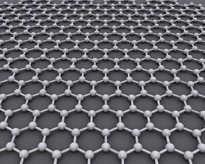
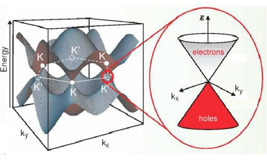

Physics 7510,
Fall 2012 semester
Advanced Solid State I
Physics of Modern Materials
Monday, Wednesday; 2:00 - 3:20 pm; room JFB 210


Instructor:
Oleg Starykh
Office: JFB 304
Phone: 801-581-6424
Fax: 801-581-4801
E-mail:
starykh {at} physics.utah.edu
Office hours: Tuesday, 3:00 - 4:00 pm; Thursday, 2:00 - 3:00 pm.
The main purpose of the class is to provide an accessible introduction to revolutionary
developments in condensed matter physics that took place in last few years.
The key topic to be covered is physics of graphene and closely related to it
topological insulators and their various interesting properties.
Book info: textbook "A quantum approach to condensed matter physics"
by P. L. Taylor and O. Heinonen should be on reserve in the Marriott Library. Just ask for the book
for Phys7510.
Tentative plan for "Physics of Modern Materials"
Lectures 1 & 2 pdf: Lattice vibrations: waves and phonons
Homework 1, due Monday, Sept 10
Lect 3 pdf:
Thermodynamic consequences. Flexural (bending) modes of 2d membrane (graphene).
Reading: pages 132-134 of graphene review paper on flexural phonons.
Lect 4 pdf: Identical particles and exchange statistics.
Homework 2, due Monday, Sept 24; Solution 2
No lecture Wed, Sept 12 -- it is moved to Fri, Sept 21, 9 am
Lectures 5-6 pdf: Second quantization for bosons and fermions.
Lecture 7 pdf: density correlations in the ground state of Fermi gas.
Homework 3, due Wednesday, October 3; Solution 3
Noninteracting electrons, diamagnetism.
Lectures 8-9 pdf: Landau levels, oscillations of magnetization (de Haas - van Alphen),
diamagnetism Landau and magnetic susceptibility of electron gas (also, few pages on Euler - Maclaurin formula).
- Part 2: novel electronic materials
Suggested Reading for the Fall break week:
The electronic properties of graphene by A. H. Castro Neto, F. Guinea, N. M. R. Peres, K. S. Novoselov and A. K. Geim;
Geometrical and topological aspects of graphene and related materials by
A. Cortijo, F Guinea and M. A. H. Vozmediano;
Topological insulators by M. Z. Hasan and C. L. Kane.
Time to think of the topic for your 15 min presentation at the end of the semester!
Graphene: band structure and Dirac spectrum
Lecture 10 pdf: crystal structure, electronic band structure
Homework 4, due Monday, October 29; Solution 4
Lecture 11 pdf: low-energy description
Lecture 12 pdf: optical conductivity
Various generalizations: bilayer graphene, edge modes in ribbons
Lecture 13 pdf: "seeing the fine structure constant"; Landau levels in graphene
Lecture 14 pdf: diamagnetic susceptibility of graphene (pretty unusual, goes as 1/T for ideal grapehene with zero chemical potential)
Lecture 15 pdf: zero-energy modes in the semi-infinite layear with zig-zag edge
Homework 5, due Wednesday, November 14; Solutions Problem 1 and Problem 2
Symmetries and topology: an overview
Topological vs non-topological phases
Lecture 16 pdf: intro to topological phases; winding numbers.
Lecture 17 pdf: example of topologically distinct phases in one-dimensional toy model of non-interacting electrons.
Edge states in topological insulators
Lecture 18 pdf: two-dimensional toy Haldane-like model (see PRL v.61 p.2015 (1988), for the original paper) model and its edge spectrum.
(Here is Mathematica file calculating Chern number Q.)
Lecture 19 pdf: Topological insulator on honeycomb (graphene) lattice
(after Kane and Mele, PRL 95, 226801 (2005)).
Implications for transport, ARPES...
List of topics for term work/presentations by students
- Part 3: interacting electrons
Lecture 20 pdf: Superconductivity,electron-phonon coupling, Cooper problem, s-, p- and other wave pairing.
Lecture 21 pdf: standard BCS story (perhaps not very clean note, sorry).
Lecture 22 pdf: toy model of 1d p-wave superconductor. Majorana end modes
(following Jason Alicea's nice review in Rep. Prog. Phys. vol.75, page 076501 (2012).
Lecture 23 pdf: How to build a p-wave superconductor?
(see also nice review by Leijnse and Flensberg Introduction to topological superconductivity and Majorana fermions.)
Students presentations: Dec.3 and 5, during regular class hours.
Time of final exam (remaining presentations): Monday, Dec.10, 1:00 - 3:00 pm, our usual classroom.
Course structure
Lecture notes will be provided. There is no required textbook.
Key review articles to be used in the class will be added later here. There are no exams in this class.
Bi-weekly homeworks
Student presentations at the end of the semester (topics of the presentations to be discussed in the class)
Pre-requisite: Phys 5510, Solid State Physics I